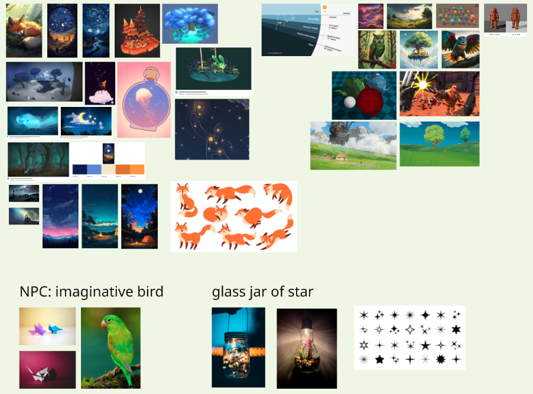
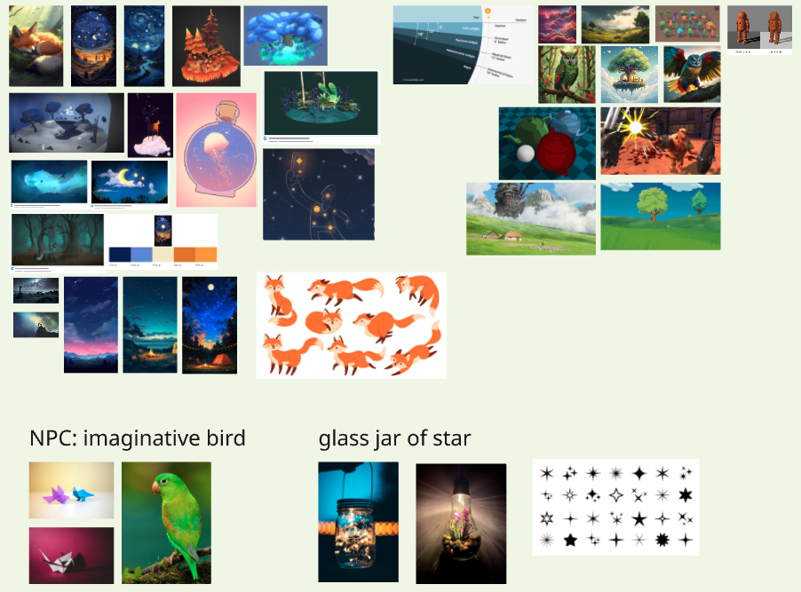

FOXIO 🦊
Please accept cookies to view this video.
Project Overview
Project time
March - April 2025 (8 weeks)
My roles
3D Artist, Project Management, Unity Development
Goals
Development of an idea to create a startup.
Technical info
VR, single player, hand controlled with gazing mechanism

.png)
About this project
Foxio is a gamified VR app that supports cognitive training for adolescents aged 12-16 with focus, memory, or patience challenges. Designed for users with diagnosed or suspected cognitive disabilities, it offers an engaging, personalized experience rooted in research-backed gameplay.
By combining immersive XR technology with practical skill-building, Foxio helps make everyday tasks easier while boosting attention, memory, and emotional regulation in a fun and motivating way.
My contributions


3D Models
.png)
.png)
Flat textures
.png)
.png)
.png)
.png)
 - kopia.png)
.png)
 - kopia.png)

Night to Day Transition
This transition was made with 2 scripts. One handling alpha of materials to be faded. A second script to handle light settings when the game end is triggered. Both are instantiated by GameManager.cs
Branding
.png)
.png)
.JPG)
User Tests
We had the privilege of visiting Stenhammarskolan in Flen,Sweden, a school that’s truly pioneering the use of XR in education in Sweden.
During our time there, we conducted a user test of our VR application, FOXIO 🦊, and received insightful feedback directly from the students (11-12 years old). Their thoughts gave us valuable learnings and highlighted exciting opportunities for improvement.


Picture gallery
 
